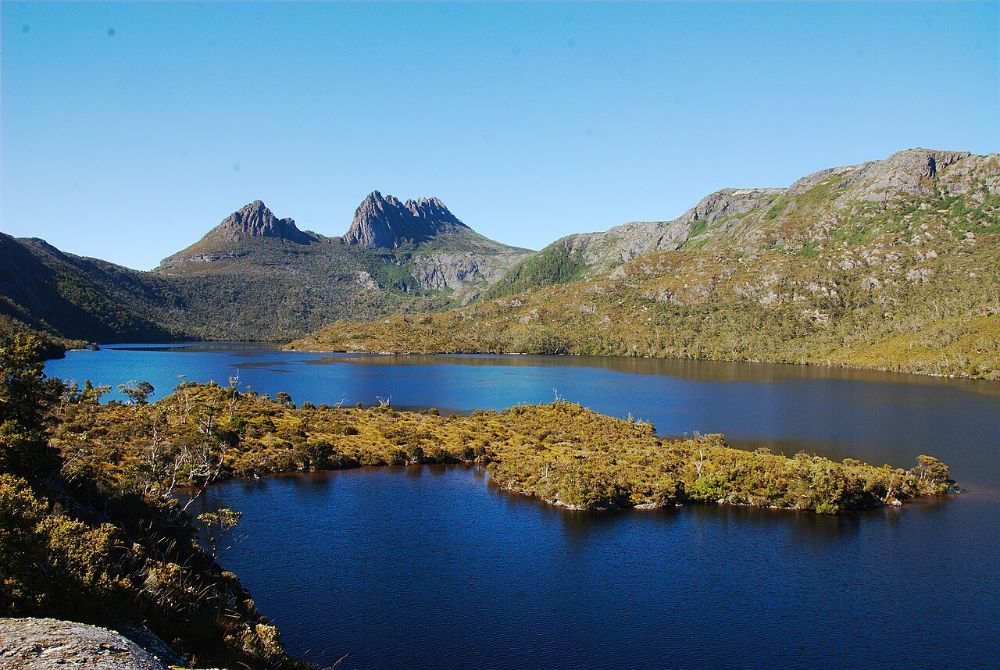

Look beyond Sydney
The busiest parks are close to the city. Parks further out have far more room for each visitor.
See Figures 6 and 8Australian national parks tourism
Our national parks are busier than ever. Where do the crowds go, and when should you go?

National parks are where many Australians go to walk, swim, camp and switch off. Visits are growing fast, and the most popular parks are feeling the pressure.
This page looks at how much land we protect, who is visiting, where the crowds end up and how the parks recovered from COVID. It finishes with some simple tips for planning a quieter trip.
A note on the data. There is no single national count of park visits. Each state measures visits in its own way, so their numbers cannot be added together. This story uses national data for land and for overseas tourists, and the two states that publish detailed, recent visitor counts: New South Wales and Tasmania. Years written like 2024-25 are financial years, from July to June.
How much land is national park, and where is it?
Figure 1
A national park is land set aside to protect nature that the public can also visit and enjoy. Australia's national database of protected areas lists 717 of them across the states and territories.
The ACT and Tasmania protect the biggest share of their land. The large states hold the most park land in total, but it is only a small slice of each state.
Click a state to highlight its parks in Figure 2. Hover over a state for exact numbers.
Source: Collaborative Australian Protected Areas Database (CAPAD) 2024, Department of Climate Change, Energy, the Environment and Water (DCCEEW). Land areas from Geoscience Australia. Chart spec (JSON)
Figure 2
Each dot is one park, placed by its area. The scale grows ten times bigger at each step, so tiny city parks and huge desert parks fit on one chart.
Most parks are small. A few outback parks are enormous. Munga-Thirri–Simpson Desert in South Australia is larger than Belgium.
Use the menu below the chart, or click the map above, to highlight one state. Hover over a dot for the park's name.
Source: CAPAD 2024 (DCCEEW). Areas in Namadgi National Park include the Bimberi Wilderness inside it. Chart spec (JSON)
Park visits keep climbing, and overseas tourists are back.
Figure 3
New South Wales has tracked park visits with a regular survey since 2008. Visits have almost doubled since 2010, reaching a record 65.6 million in 2024-25.
Bushfires, COVID and floods caused dips along the way, but each time the visitors came back.
Hover over a point for the exact number.
The survey changed its method in 2024-25, so compare the last point with care.
Source: NSW National Parks and Wildlife Service (NPWS), Parks Visitation Survey 2024-25. Chart spec (JSON)
Figure 4
This is not only a NSW story. Across Australia, demand from Australian travellers for visits to national and state parks grew by 73% from 2014 to 2023.
Only botanic gardens and bushwalking grew faster.
Source: Tourism Research Australia, National Visitor Survey, as reported by Austrade (2024). Chart spec (JSON)
Figure 5
Read this chart like a clock. Each spoke is a month, and the further a line is from the centre, the more overseas visitors arrived.
In 2021 the borders were closed and arrivals fell by 97% compared with 2019. By 2025 they were back to 94% of the 2019 level. December was the busiest month in all three years.
Click a year in the legend to focus on it. Hover over a point for the number.
Source: Australian Bureau of Statistics, Overseas Arrivals and Departures, July 2026, Table 5 (short-term visitor arrivals, original series). Chart spec (JSON)
Most visits happen close to Sydney, and most are by locals.
Figure 6
Blue Mountains National Park alone had 7.8 million visits in 2024-25. Circle size shows the number of visits.
Twelve of the top 20 parks sit in and around Sydney, so the box on the right zooms in on that area.
Hover over a circle for the park's name, visits and rank.
Figure 7
About one in six visits to NSW parks is made by someone from another state. Among capital cities, Melbourne sends the most visits, followed by Brisbane and Canberra.
The wider the line, the more visits came from that city.
Hover over a line for the city and number of visits.
Source: NSW NPWS Parks Visitation Survey 2024-25. Chart spec (JSON)
Figure 8
NSW parks are managed in eight regions. Parks in Greater Sydney get 43% of all visits. That is more than the next three regions combined.
Hover over a box for the number of visits.
Source: NSW NPWS Parks Visitation Survey 2024-25. Chart spec (JSON)
Figure 9
84 out of every 100 visits are made by people who live in NSW, and most of these are day trips close to home. The other 16 are made by interstate visitors.
Source: NSW NPWS Parks Visitation Survey 2024-25. Chart spec (JSON)
COVID hit visitor numbers hard. Most sites have bounced back.
Figure 10
Tasmania counts visitors at 14 sites every year. Each cell shows visitors in thousands.
The colour compares each year with 2019-20, the first year in the data. Brown means fewer visitors and green means more. Most sites dipped in 2020-21, and all but one have since recovered. Maria Island has nearly doubled.
Hover over a row to highlight that park in Figure 11.
Mount Field has no 2024-25 figure because of a data error at the source. Gordon River counts interstate and overseas visitors only.
Source: Tasmania Parks and Wildlife Service, Visitors to Selected Parks and Reserves (Reference Sites), 2019-20 to 2024-25. Figures are estimates. Chart spec (JSON)
Figure 11
Freycinet and Cradle Mountain each drew more than 260,000 visitors in 2024-25.
Tasmania's two famous multi-day walks, the Three Capes Track and the Overland Track, had only 11,000 to 13,000 walkers each. They take several days, so far fewer people do them.
Source: Tasmania Parks and Wildlife Service, Reference Sites 2024-25. The Overland Track was partly closed by bushfire in February 2025. Chart spec (JSON)
What the data says about going smarter.
Figure 12
Most locals visit for the day. Interstate visitors are more likely to stay the night, which gives them time to reach parks further from the city.
Source: NSW NPWS Parks Visitation Survey 2024-25. Chart spec (JSON)
Each tip is backed by a chart above.
The busiest parks are close to the city. Parks further out have far more room for each visitor.
See Figures 6 and 8Summer and Easter are the busiest times in NSW parks, and December is usually the peak month for overseas visitors.
See Figure 5Long walks see a small fraction of the crowds at the famous lookouts.
See Figure 11Australia's national parks are more popular than ever. Crowds can wear down the places people come to see, so spreading visits across more parks and quieter times helps protect them for the next generation.